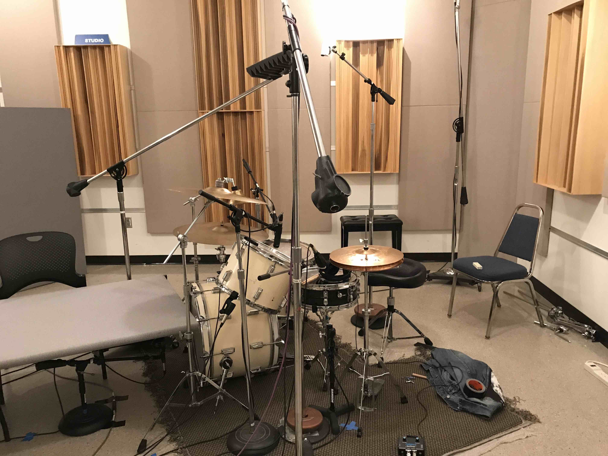
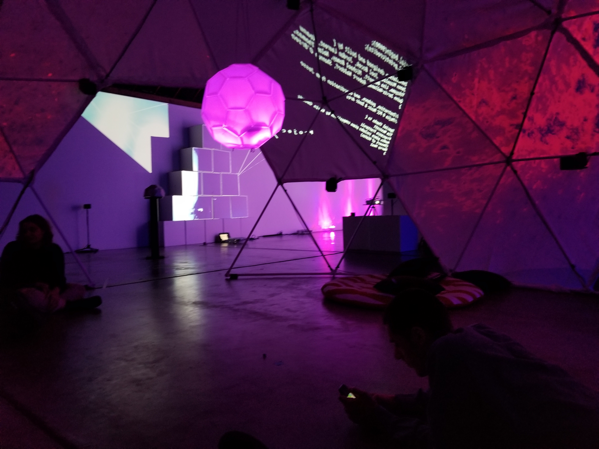
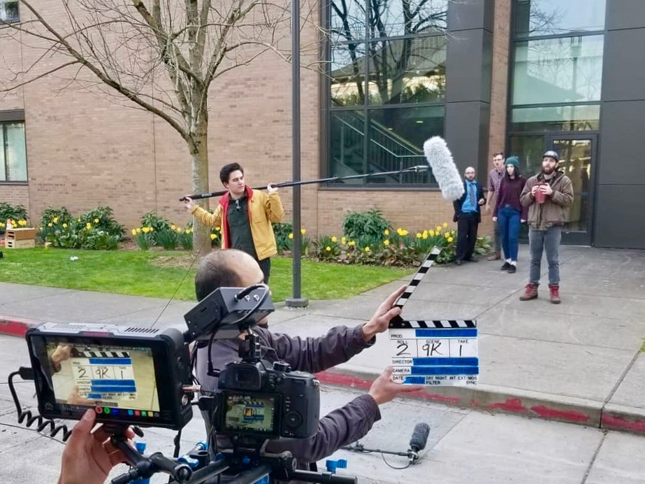

Keanu Yokoyama is an audio engineer, producer, sound designer, and musician. He originates from the northern coast of Oregon. Keanu has earned a degree in Music and Sonic Arts from Portland Community College, and is currently studying Sonic Arts and Music Production at Portland State University, as well as Creative Coding for Artists at Portland Community College. Keanu enjoys capturing and designing unique sounds to bring his clients vision to life.
Keanu utilizes Portland Community College's recording studio in Portland, Oregon, and Portland State University's recording studio in Portland, Oregon, as well as his project studio, Foxglove Studios, located in Astoria, Oregon. His studio time includes recording, engineering, mixing, and producing. Keanu works collaboratively with artists to create original music, concepts, and sounds. Keanu's audio engineering reaches into the world of sound for picture with projects in field recording, post production, ADR, and Foley.
Keanu's work also includes art installments, and instrument/sound design via creative coding. His experience includes Computer Aided Design, programing, microcontrollers, and programs such as Max MSP, Pure Data, Arduino, and Processing. His work can be seen in the examples below.
Studio Examples
 Keanu has experience working in his own studio, Foxglove Studios, as well as Portland Community College's, and Portland State University's studios. The link here will bring you to examples that Keanu has worked on, via the "Foxglove Studio" page. Keanu has been educated in studio recording techniques in order to achieve the best recording possible. Keanu has experience recording with a completely analog set which includes an analog console, effects, and medium. He also has worked in an entirely digital setting, with digital console, effects, and DAW. Keanu's experience makes him well equipped in any recording situation.
S.A.M.P.L.E.

SAMPLE is the School of Music & Theater’s Laptop Ensemble. The ensemble is comprised of Sonic Arts and Music Production students with a focus on immersive experiential composition. Students engage computer systems and technology as research tools to explore composition, spatialized sound performance, synthesis techniques, field recording, acoustic ecology, and emergent possibilities within musical language. SAMPLE has performed at the Portland Institute for Contemporary Art, PICA, for Subharmonic: A Sonic Arts Symposium and as part of Assembly 2018, PSU's Art and Social Practice MFA annual spring showcase.
More about S.A.M.P.L.E, as well as other pieces performed can be found here.
The PSU Sonic Arts and Music Production program explores the natural cycle of circadian rhythms within the urban bustle of Portland with their visual and audio art installation, 45°N: Circadian Rhythms. Each student used a combination of field recording, synthesis, and other forms of audio editing to represent the soundscape fo the location in an emotional and literal sense. To give the listener a more immersive experience, they developed a visual representation of their location with lighting evocative of the time of their recording.
Sound Art is an exploration of the aesthetic, emotional, and physical qualities of sound. Unburdened by the various theoretical frameworks which surround traditional music, the sound artist is free to utilize and unlimited palette of sounds. Sound artists critically examine human perception and our relationships with nature, time, space, our bodies, and each other thorough the ephemeral medium of sound.
Melody, harmony, and rhythm comprise the primary elements of music. We are conditioned by our musical culture to understand sound in these terms, limiting our possibilities of expression. Sound art, on the other hand, eschews these elements to avoid our culturally-defined expectations around music.
The foundation s of sound art were set in the early Twentieth century by composers and musicians who set out to redefine our relationship with sound. Luigi Russolo's The Art of noises serves as an earl y manifest: in our post-industrial society where we are constantly surrounded by noise, artists must free themselves to explore in itself with new instruments and techniques. Sound art emerged alongside the invention of computers, synthesizers, and acoustics while drawing influence from a diverse set of academic disciplines.
A video of the piece can be found below. To learn more about the project, and read each artist's statement, click here.
Project Ø

Project Ø is a collaborative interactive art piece. Keanu was part of the Creative Coding Capstone class at PCC in 2018 who produced this piece. This project featured a 32 channel ambisonic speaker array, a 20x12ft geodesic dome, 3 projectors mapped to the dome cover, and two custom controllers made with 3D printed and laser cut parts along with microelectronics. It was set up for public display at DISJECTA. There were three sets of content performed, each of which could be interacted with via two main controllers. The first being a sphere suspended from the center of the dome; this controller could be interacted with by swinging, spinning or pushing it. The second controller was a scaled down and simplified model of the dome; consisting of 6 pentagon panels, 10 hexagon panels, and 5 half hexagon panels, all of which were equiped with an infrared sensor and corresponding Neopixel. The entirety of the controller sits on a rotary encoder. When up and running, the infared sensors trigger its corresponding neopixel, and sends OSC information. The design files, STLs, code, and everything related can be found on the project's
github.
A video of the piece can be found below.
Credits:
Project Manager: Jesse Mejia
Team: Michael Romay, Lisa Bennett, Keanu Yokoyama, Nolan Thomas, Quinn Jarvis-Holland, Shannon O'Brien, Jason Mizzelle, Robert Waldorf, Joel Bocek, Jordan Laurent
Footage: Patrick Dull & Trevin Pieh
Special Thanks: DISJECTA, Darcy Neal, Dan Wenger, Francesca Frattaroli, Tim Westcott
GR-S1 Granular Synthesizer

GR-S1 is a powerful granular synthesizer packed into the small and familiar form of a cassette tape. This is a project that I am currently working on and is not yet complete. The instrument works by taking in live audio, granulizing it, and then playing those rearranged grains via midi controller. The synth was prototyped in Max MSP, before being ported to Pure Data, in order to be run on a Raspberry Pi Zero. Kicad was used to design a PCB that could accommodate the Raspberry Pi Zero, physical controls, various DACs/ADCs, and components. The final product will be housed in an aluminum case. Using CAD, a prototype case has been developed and 3D printed. This website will soon be updated to include a page dedicated to this product.
Environmental Instrument

The Environmental Instrument translates data from its surroundings into frequencies. This project was conceived when I wanted to create a non-standard notation piece that incorporated and element of randomness. The instrument using three sensors that control separate waveforms: a light sensor; a temperature sensor, and a motion sensor. The light sensor controls the most prevalent frequency, meaning that more light will equal higher frequencies, and less light will equal lower frequencies. Similarly, the temperature sensor changes its frequency positively with increased temperatures, and negatively with decreased temperatures. The pitch, roll, and yaw all control separate frequencies as well. Again, a negative or positive pitch, roll, and yaw, will control the frequencies respectively. These sensors are read and turned into frequencies by using a Teensy 3.2, and the Teensy audio library.
The project piece, which includes a diagram on how to build the instrument, a block of code, and a set of instructions for the performer to follow, can be found on my github. An example of this piece being performed can be seen on my Soundcloud account, Kokonama .
Sound For Picture

Keanu's recording know-how also reaches into the world of sound for picture. Keanu has studied the techniques used to bring sound to the big screen. His experience in the studio includes creating immersive soundscapes, audio editing, as well as sound design, ADR, and Foley. Keanu is also well versed in recording techniques needed to record audio in the field. This includes, but is not limited to, boom mic operation, lavaliere dressing, strategic mic placements, and field mixing and recording. An example of Keanu’s work in this field can be found in the short film "Entropy", directed by Adam Stockman. In this short film, Keanu used all the above techniques, and played a role in every aspect of the sound recording, and design.